Las palabras con P que se parecen demasiado de un vistazo — las que te hacen frenar a media lectura. Aquí, separadas una por una.
🔊 Velocidad:
premio
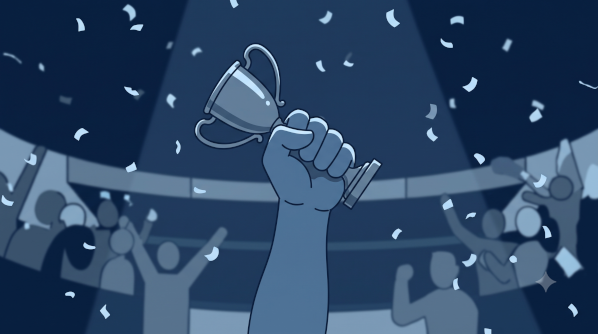
premio
pr·em·io — lo que ganas
prize · award · reward
No confundir con precio (lo que pagas).
precio
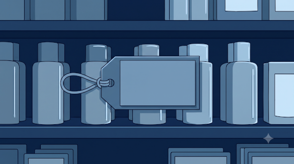
desprecio
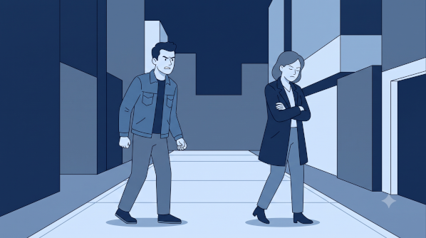
precio/desprecio
des + precio → quitarle el valor
price · contempt
Una contiene a la otra — por eso se cruzan al leer.
presión
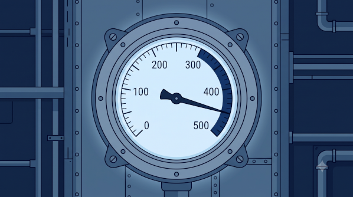
presión
pr·e·sión — lo que aprieta
pressure (física y figurada)
No confundir con pasión (pa-, no pre-).
pasión
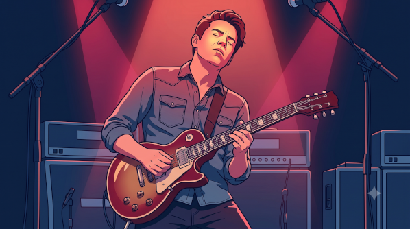
pasión
p·a·sión — el fuego
passion · intense feeling
No confundir con presión (pre-, no pa-).
prensa
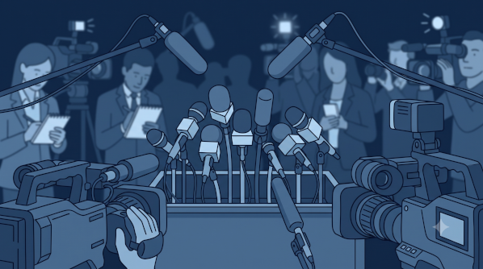
prensa
pr·ensa — los medios
the press · the media
Misma raíz que presión: algo que aprieta.
propio
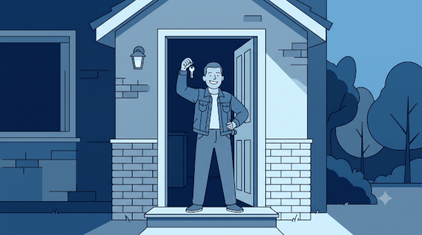
propio
lo propio — lo de uno mismo
(one's) own · typical of · -self
No confundir con propósito (pro-pósito).
a propósito
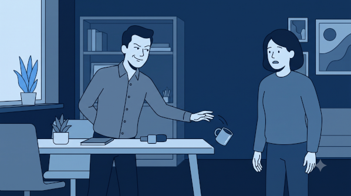
a propósito
pro·pósito — la intención
on purpose · by the way
Dos trabajos: intención y cambio de tema.
propina
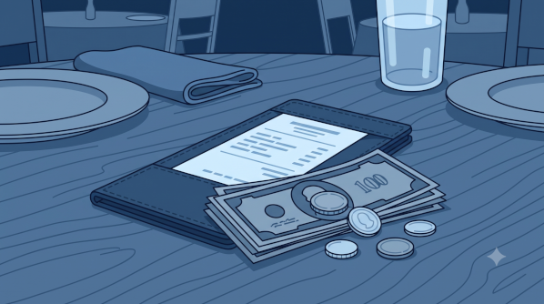
propina
pro·pina — lo que dejas
tip · gratuity
Mismo pro-p que propio y propósito.
primero
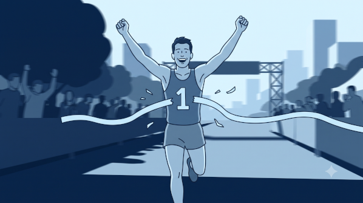
primero
prim·ero — el primero
first · firstly
No es premio ni primo (cousin).
primo
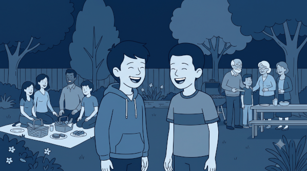
primo
prim·o — el familiar
cousin · (number) prime
A una letra de primero; misma raíz visual que premio.
prueba
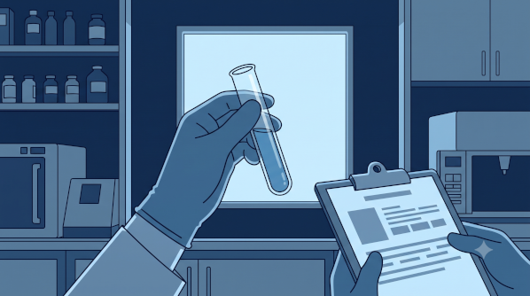
prueba
una prueba — proof · test · trial
proof · test · trial · (medical) test
Un solo sustantivo, muchos oficios.
pista
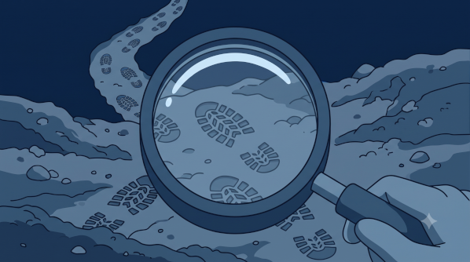
pista
una pista — la huella que se sigue
clue · track · runway · court
De la huella a la pista de baile.
premio
de premiar (to reward) · sustantivo masculino
Sentido principal
What you win or earn — covers prize (lottery, contest), award (premio Nobel), and reward. It's the payoff, not the cost.
NOTA* The look-alike trap is premio (pr-em-io, what you win) vs precio (pr-ec-io, what you pay) — one letter apart. Hook: e-M for Medalla; e-C for Costo.
neutralsustantivo
Ejemplos
Ganó el primer premio del concurso.
She won first prize in the contest.
Le dieron un premio por su trayectoria.
They gave him an award for his career.
precio/desprecio
una palabra vive dentro de la otra: des + precio
precio · sustantivo masculino
What something costs — the amount you pay. el precio de la gasolina, ¿qué precio tiene?, a precio de oferta.
El precio subió otra vez este mes.
The price went up again this month.
¿Cuál es el precio final, con todo incluido?
What's the final price, all included?
desprecio · sustantivo masculino
Treating someone or something as worthless — contempt, scorn, disdain. From despreciar (to despise). The verb also means to turn down / spurn an offer.
Lo miró con desprecio y se fue.
She looked at him with contempt and left.
Rechazó la oferta con desprecio.
He turned the offer down scornfully.
NOTA* The memory hook is literal: des- often means undo / strip away, so des·precio = "to strip the value off" someone → to look down on them. Seeing precio hiding inside desprecio is exactly why they snag the eye — and exactly what links their meanings.
neutralpar confundible
presión
de presionar · del latín pressio · sustantivo femenino
Sentido principal
Force pressing on something — works physically (presión arterial, presión atmosférica) and figuratively (presión social, trabajar bajo presión).
NOTA* The reading snag is presión (pre-) vs pasión (pa-): pressure squeezes from outside, passion burns from inside. Same family as prensa and presionar — all about something that presses.
neutralsustantivo
Ejemplos
Hay que controlar la presión arterial del paciente.
The patient's blood pressure needs to be monitored.
Trabaja muy bien bajo presión.
She works very well under pressure.
pasión
del latín passio ("padecer") · sustantivo femenino
Sentido principal
Intense emotion or enthusiasm — hablar con pasión, la pasión por la música. Capitalized, la Pasión is the religious Passion.
NOTA* Don't let pasión and presión blur: pasión is fire from within, presión is force from outside. Its Latin root is "to suffer" (cf. padecer, paciente) — but in everyday use it's passion / drive.
neutralsustantivo
Ejemplos
Habla de su trabajo con verdadera pasión.
He talks about his work with real passion.
La cirugía es su gran pasión.
Surgery is her great passion.
prensa
de prensar (to press) · sustantivo femenino
Sentido principal
The news media as a whole — la prensa local, rueda de prensa (press conference), libertad de prensa, prensa amarilla (tabloids). Literally a machine that presses (the printing press), then the media by extension.
NOTA* Same root as presión / presionar — all from "to press." That shared family is why prensa and presión read as cousins: prensa (the press) vs presión (the squeeze).
neutralsustantivo
Ejemplos
La prensa cubrió el caso durante semanas.
The press covered the case for weeks.
El hospital dio una rueda de prensa.
The hospital held a press conference.
propio
del latín proprius · adjetivo
Sentidos
(1) one's own — mi propio consultorio. (2) characteristic / typical of — es muy propio de él. (3) proper, fitting — no es propio de un acto formal. (4) emphatic "-self" — el propio director lo dijo (the director himself).
Expresiones útiles
amor propio (self-esteem / pride), nombre propio (proper noun), en defensa propia, por iniciativa propia.
NOTA* The trip-up is propio (pro-pio, "own") vs propósito (pro-pósito, "purpose"). Different words, just a shared pro- head. Also note propio agrees: propio / propia / propios / propias.
neutraladjetivo
Ejemplos
Quiero abrir mi propio consultorio.
I want to open my own practice.
Esa reacción es muy propia de ella.
That reaction is so typical of her.
a propósito
de propósito (purpose, intention) · del latín propositum
Dos trabajos
(1) on purpose — deliberately: Lo hizo a propósito. (2) by the way — a topic-changer: A propósito, ¿hablaste con ella? Position and tone tell them apart.
La palabra suelta
On its own, propósito = purpose / intention, and in the plural, resolutions: los propósitos de Año Nuevo.
NOTA* Visually it brushes against propio — same pro- start, different word. And don't read the "by the way" sense as accidental: a propósito as a connector still carries that flavor of "now that it comes to mind, on purpose I'll mention it."
neutrallocución
Ejemplos
No fue a propósito, fue un accidente.
It wasn't on purpose, it was an accident.
A propósito, ¿confirmaste la cita?
By the way, did you confirm the appointment?
propina
de propinar · del latín propinare ("convidar a beber") · sustantivo femenino
Sentido principal
The tip / gratuity you leave for service — dejar propina, ¿está incluida la propina?. Neutral and everyday across Latin America.
Expresión útil
de propina = as a bonus / on top of that / to boot — a little extra, wanted or not: Llegó tarde y, de propina, sin avisar.
NOTA* The eye-trap: propina shares its pro-p opening with propio (own) and propósito (purpose) — three unrelated words, one silhouette. Etymology bonus: it comes from an old sense of buying someone a drink (propinar), so the coin for a round became the coin for good service.
neutralsustantivo
Ejemplos
Dejamos una buena propina al mesero.
We left the waiter a good tip.
¿La propina ya está incluida en la cuenta?
Is the tip already included in the bill?
Llegó tarde y, de propina, sin avisar.
He showed up late and, on top of that, without warning.
primero
del latín primarius · adjetivo / adverbio / sustantivo
Sentidos
"first" as an ordinal (el primero de la fila) and "firstly / first of all" as an adverb (Primero, lávate las manos). As a noun: lo primero, el primero en llegar.
NOTA* Drops to primer before a masculine singular noun — el primer paso, el primer día — but stays full when it stands alone: llegó primero. Eye-trap cluster: primero (first) · premio (prize) · primo (cousin) all share that pr-m skeleton.
neutralapócope: primer
Ejemplos
Llegó primero a la meta.
He arrived first at the finish line.
Primero revisamos los signos vitales.
First we check the vital signs.
primo
del latín primus ("primero") · sustantivo / adjetivo
Sentidos
(1) cousin — the family relation: primo / prima / primos / primas. (2) prime — in math, número primo. The two share an origin: a cousin is "first-degree" kin, a prime is a "first" number, divisible only by 1 and itself.
NOTA* The eye-trap: primo sits one letter from primero (cousin vs. first) and shares the pr-m skeleton with premio (prize). In some regions (mainly Spain) hacer el primo means to be played for a fool — colloquial, and not part of neutral Latin American usage.
neutralsustantivo / adjetivo"tonto" = coloquial · España
Ejemplos
Mi primo estudia medicina en Bogotá.
My cousin studies medicine in Bogotá.
El siete es un número primo.
Seven is a prime number.
prueba
de probar (to test / try / prove) · sustantivo femenino
Sentidos
(1) proof / evidence — no había pruebas, pruebas del delito. (2) test / exam — aprobar la prueba. (3) trial / try — a prueba (on a trial basis), poner a prueba (to put to the test), período de prueba. (4) medical test — prueba de esfuerzo, prueba PCR, prueba de embarazo.
El marco "-proof"
a prueba de + sustantivo = X-proof: a prueba de agua (waterproof), a prueba de balas (bulletproof), a prueba de golpes (shockproof).
NOTA* The trip here isn't a look-alike — it's one word wearing many hats. Everything traces back to probar (to try / test / prove), so a courtroom proof, a school test, a trial run, and a lab test are all the same noun. And it's la prueba — feminine.
neutralsustantivomuchos sentidos
Ejemplos
Le hicieron una prueba de esfuerzo al paciente.
They gave the patient a stress test.
No había pruebas suficientes para condenarlo.
There wasn't enough evidence to convict him.
Esta funda es a prueba de golpes.
This case is shockproof.
pista
del italiano pista ("huella, rastro") · sustantivo femenino
Sentidos
(1) clue / lead — seguir la pista, dar una pista, pistas del caso. (2) trail / track — tras la pista de. (3) runway — pista de aterrizaje. (4) court / rink / floor / slope — pista de tenis, pista de hielo, pista de baile, pista de esquí. (5) audio track — pista de audio.
NOTA* Like prueba, the trip is range, not resemblance. One core image holds it together: a track — a strip you follow or move along. A clue is the track that leads you to the answer; a runway, a court, and a dance floor are all marked tracks you move on.